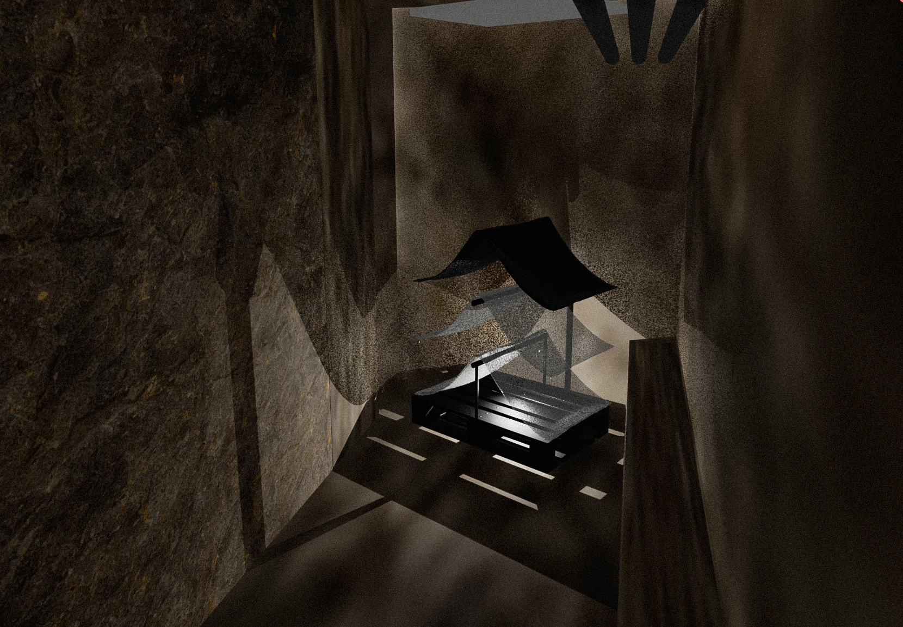
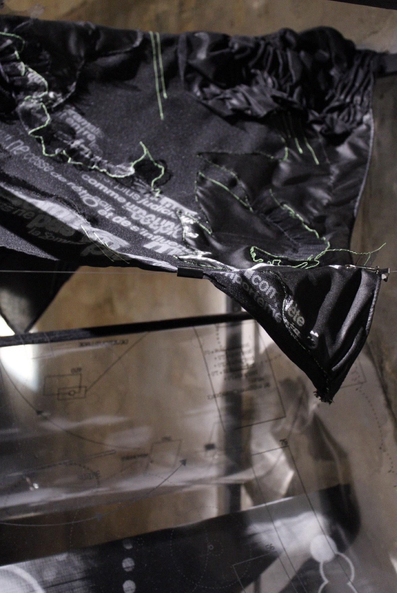
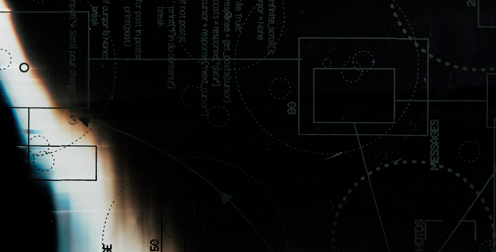
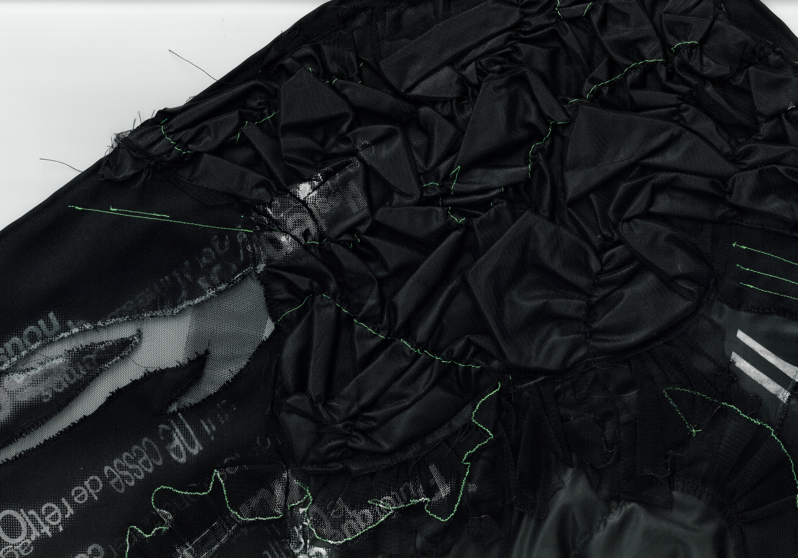
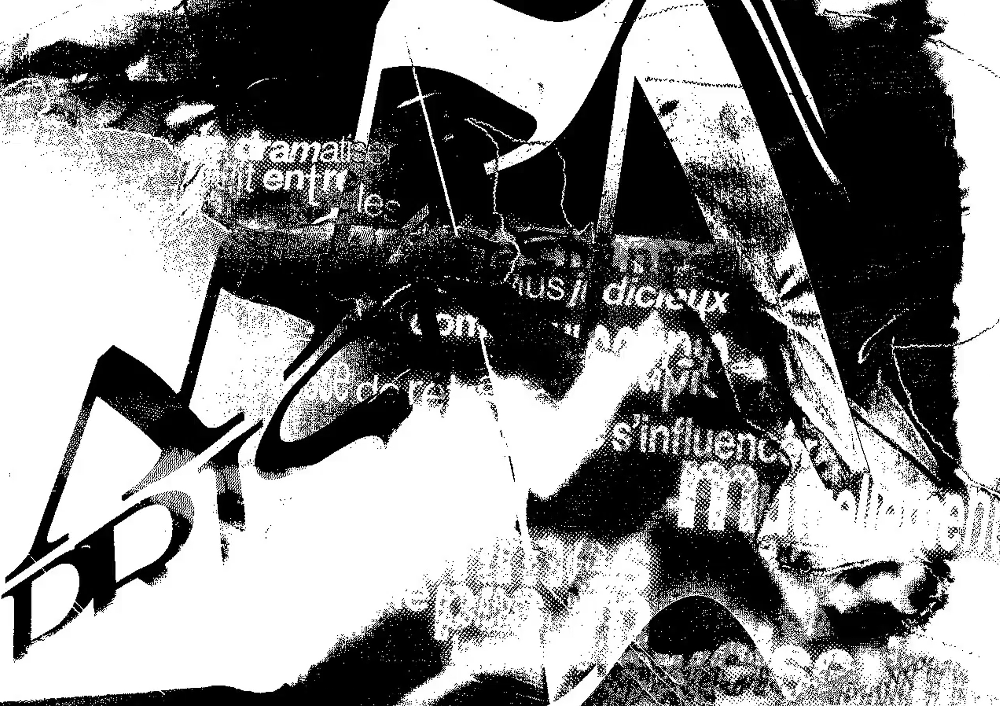
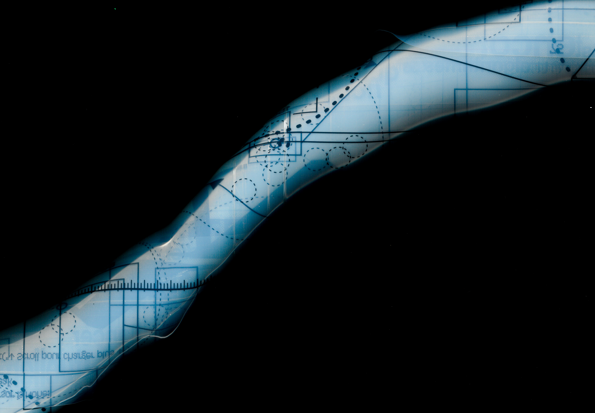

Le manifeste de notre collectif prend la forme d’une tente en plusieurs strates : interactions avec la plateforme, catégorisation par l’algorithme et notre lecture de cet enjeu. Le textile vient comme une matérialisation de l’interface utilisateur / plateforme.






